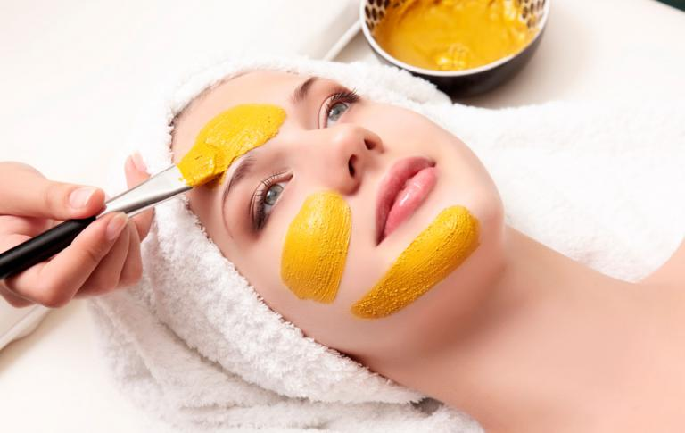
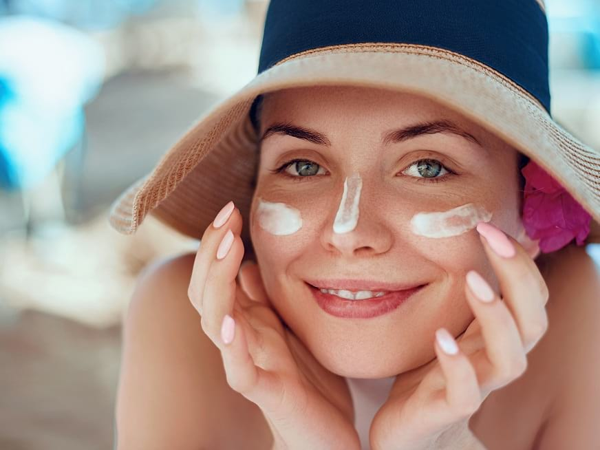

sugerencias para el cuidado de la piel
cuidado de la piel
sujerencias para el cuidado de la piel
¿no tienes tiempo para el cuidado de tu piel? todavia
puedes mimarte siguiendos los conceptos basicos.
Un buen cuidado de la piel y elegir un buen estilo de vida saludable pueden
pueden ayudarte a retrasar el envejecimiento natural y prevenir diversos
problemas
de la piel.Comienza con estos 5 consejos.
1. proteje del sol
Una de las formas más importantes para cuidar la piel es
protegerla.
del sol una vida de exposicion al sol puede provocar
arrugas, manchas de la edad y otros problemas de la piel,
asi como aumento del riesgo de cáncer en la piel.
Para obtener la protección solar más completa:
- Usa protector solar.Utiliza un protector solar de amplio
aspectro que tenga un factor de proteccion solar de, al menos,
15. Colócate abundante cantidad de protector solar, y vuelve
aplicarlo cada dos horas o con mas frecuencia si estás
nadando o transpirando.
- Busca lugares con sombra. Evita el sol entre las 10 de la
mañana y las 4 de la tarde, cuando los rayos solares son más
intensos. - Limita la duración del baño. El agua caliente y las duchas o
baños prolongados eliminan los aceites naturales de la piel.
Limita la duración del baño o de la ducha y usa agua tibia en lugar de agua caliente. - Evita los jabones fuertes. Los jabones y detergentes fuertes
pueden eliminar los aceites naturales de la piel. En su lugar,
usa limpiadores suaves. - Aféitate con cuidado. Para proteger y lubricar la piel, aplica
crema, loción o gel de afeitar antes de afeitarte. Para una
afeitada más al ras, usa una afeitadora limpia y afilada.
Aféitate en la dirección en que crece el pelo, no a contrapelo. - Sécate con golpecitos. Después de lavarte o bañarte, sécate
la piel suavemente con una toalla dando pequeños toques
para que quede algo de humedad en la piel.
2.No fumes.
Fumar le da a tu piel un aspecto avejentado y contribuye a laformación de arrugas.Fumar estrecha los pequeños vasos
sanguíneos que se encuentran en las capas más superficiales de
la piel, lo que disminuye el flujo sanguíneo y da un aspecto más
pálido a la piel. Esto también elimina el oxígeno y los nutrientes
que son importantes para la buena salud de la piel.
Fumar también daña el colágeno y la elastina, las fibras que le
aportan fortaleza y elasticidad a la piel. Además, las expresiones
faciales reiteradas que haces cuando fumas, por ejemplo, fruncir
los labios al inhalar y entrecerrar los ojos para exhalar el humo,
pueden contribuir a la formación de arrugas.
demás, fumar aumenta el riesgo de carcinoma espinocelular. Si
fumas, dejar de hacerlo es la mejor manera de protegerte la piel.
Pídele a tu médico consejos o tratamientos que te ayuden a dejar
de fumar.
3. Trata tu piel con suavidad
La limpieza y el afeitado diarios pueden perjudicar tu piel. Paratratarla con suavidad:
4. Lleva una dieta saludable.
Una dieta saludable puede ayudarte a verte y sentirte mejor.Come muchas frutas, verduras, granos integrales y proteínas
magras. La asociación entre la dieta y el acné no está clara, pero
algunas investigaciones sugieren que una dieta con alto
contenido de aceite de pescado o suplementos de aceite de
pescado y baja en grasas no saludables y carbohidratos
procesados o refinados podría promover una piel más joven.
Beber mucha agua ayuda a mantener la piel hidratada.
5. Controla el estrés.
Cuando el estrés está fuera de control, la piel puede volversemás sensible y se pueden desencadenar brotes de acné y otros
problemas cutáneos. Para fomentar una piel sana, y un estado de
ánimo sano, toma medidas para controlar el estrés. Duerme lo
suficiente, fija límites razonables, recorta tu lista de tareas
pendientes y encuentra tiempo para hacer las cosas que
disfrutas. Los resultados podrían ser más significativos de lo que esperas.
¿Cómo elegir un limpiador y tónico adecuados?
El agua por sí sola no limpia su cara. Es necesario utilizar un tensoactivo (undetergente que se disuelve tanto en agua como en grasa) para capturar la
suciedad y eliminarla suavemente de su piel. Es importante elegir productos que
sean suaves para la piel. El lavado frecuente con jabones ordinarios o con
tensoactivos agresivos puede debilitar la función de barrera de la piel, del modo
siguiente:
a un pH neutro o incluso alcalino, lo que reducirá su capacidad para combatir
las bacterias
piel)
las células en la epidermis)
Cuando la función de barrera de la piel se debilita, su sensibilidad aumenta y es más propensa a la sequedad y la irritación.
 | TIPOS DE PIEL | ASPECTO | TEXTURA |
|---|---|---|
| normal | luminosa con poros cerrados | suave y tersa |
| seca | opaca con poros cerrados | aspera y delgada |
| grasa | brillante con poros abiertos | resbaladiza y gruesa |
| mixta | frente y menton: brillante con poros abiertos y mejillas y sien: opaca con poros cerrados | Resbaladiza y gruesa aspera y delgada |
| con acné | brillante con poros abiertos presencia de barros y espinillas | resbaladiza, gruesa e irregular | sensible | rojiza con vasos dilatados (puede ser grasa ó seca) | extremadamente delgada |